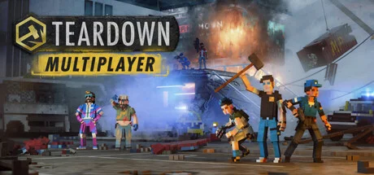

体素破坏模拟，全场景物理可破坏的沙盒。
想象一片当代北欧小镇 Löckelle——一片冷调海岸线上的港口、废弃工厂、富人别墅、金属仓库、加油站、隧道组成的完全可破坏体素世界。Tuxedo Labs 把每一根钢梁、每一面砖墙、每一辆汽车、每一块木板做成可拆解体素——大锤砸下去会有真实碎屑飞溅，炸药引爆会让混凝土向预设方向倒塌。光照系统是实时光线追踪 + 每个体素自发光——傍晚瑞典小镇被夕阳染成金色海面，深夜每盏路灯反射在湿沥青上。整个世界是体素 × 光追 × 物理三位一体的破坏即艺术装置。
你扮演Löckelle Teardown Services 的拆迁工——开破皮卡上下班的小镇蓝领。开场你接到第一份合法拆除合同：把一栋仓库砸平。但雇主名单逐渐变质——保险公司要你「意外」烧掉别墅、富商要你偷走限量跑车、地下组织要你从警察档案室拿走证物。剧情核心是灰色契约滑坡——每一份合同都比上一份更脏。Tuxedo Labs 用北欧极简文档讲故事，散落的报纸碎片+对讲机录音+便条把小镇黑社会拼成完整图景。
那次你提前 5 分钟在地图上铺好一条由倒下钢梁组成的车道、按下计时键后用 53 秒砸完三栋仓库开车冲出地图的瞬间，Tuxedo Labs 把体素物理破坏推到独立游戏新品类——你打的不是怪，是「60 秒之内拆完跑路」这道限时几何谜题；那场你按下点火让汽油桶引发连环爆炸把整栋别墅向预设方向倒塌的桥段——破坏路径规划让你明白「破坏不是发泄，是限时解谜」；那次你下载工坊 Mod 把整张地图换成高达基地体素重建的对话节点，Mod 生态不是附属品。这不是关于打败反派的故事，是「你能在 60 秒内拆完跑路吗」的故事——下一份合同你怎么排破坏链？
体素光追破坏 × 北欧拆迁艺术，是 Tuxedo Labs 把Minecraft 血统的体素几何视觉（每个像素都是 3D 立方体）和实时光线追踪渲染技术（自发光体素+材质反射+体积雾光线）以及北欧极简冷调小镇美学（瑞典海岸线+红木房屋+灰色仓库+冷蓝夜光）三层缝合在完全可破坏物理沙盒外壳里的混血美学。底色是《盗火线》× 北欧黑色电影双重血统；变异在于把破坏过程本身做成审美对象——一栋楼倒下时的灰尘飞溅与碎屑反射光，本身就是镜头主体。
「破坏物理+体素+北欧极简」视觉线跨越四十年。1995 年迈克尔·曼《盗火线》定义现代银行抢劫片视觉范式——本作灰色契约调性精神祖父。1990 年代北欧黑色电影 Nordic Noir定义冷调小镇罪案美学——Löckelle 美术血统底色。2009 年Mojang《Minecraft》定义体素游戏品类母版——本作几何血统直接来源。2001 年起Rockstar《GTA》系列定义开放世界犯罪沙盒——本作合同任务结构精神参照。2015 年NVIDIA RTX 实时光追技术普及，让全场景光线追踪成为可能。2018 年Tuxedo Labs 自研体素物理引擎完成。2020 年《Teardown》Early Access 登场。2022 年《Teardown 1.0》正式发售 + 工坊 Mod 生态——把限时破坏解谜推到独立现象级。
基于体验清单 · 审美偏好 · IP故事三维度综合选出
点击链接跳转到对应平台查看 · 仅整理外部链接